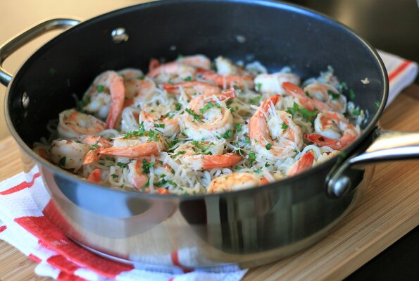

Keto Shrimp Scampi

This shrimp scampi is transformed into a keto meal by using shirataki noodles. I like to double the amount of crushed red chiles for an extra kick!
This will make 3 lunch-sized portions or 2 dinner-sized portions. Grate some Parmesan cheese on top before serving, if desired.
Ingredients:
- 2 (8 ounce) packages shirataki noodles, drained and rinsed
- 1 tablespoon olive oil
- 2 cloves garlic, minced
- 1 tablespoon minced shallot
- 1/4 tablespoon red pepper flakes
- 12 ounces raw shrimp, peeled and deveined
- 1/4 teaspoon salt
- 1/8 teaspoon ground black pepper
- 3 tablespoons fresh lemon juice
- 3 tablespoons dry white wine
- 2 tablespoons butter
- 1 tablespoon chopped fresh parsely
Steps:
- Cover shirataki noodles with water and bring to a boil. Boil for 5 minutes. Drain.
- Return drained noodles to the saucepan and cook over medium heat to remove any excess moisture, 5 to 6 minutes. Remove from heat and set aside.
- Drizzle olive oil into a large skillet over medium heat. Add shallot and stir until translucent, 2 to 3 minutes. Take care not to burn. Add garlic and red pepper flakes;
stir for 1 minute. Add shrimp and cook for 2 to 3 minutes per side, taking care not to overcook. Season with salt and pepper.
- Transfer shrimp to a bowl, reserving pan drippings in the skillet. Whisk lemon juice and white wine into the skillet.
Add butter and cook until fully incorporated and sauce begins to thicken slightly, 3 to 4 minutes.
- Return shrimp to the skillet. Add noodles. Sprinkle with parsley and toss to combine.